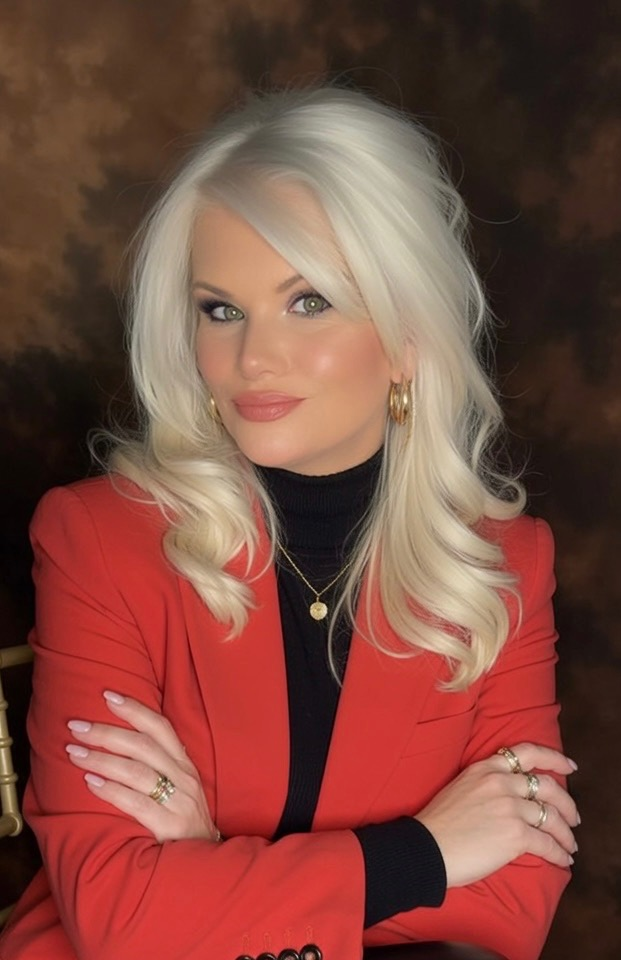

I run the moving parts behind executives, attorneys, and boards: calendars, meetings, travel, purchasing, and the confidential record. 20 years of it, most recently for a 15-member governing board.

If your board meetings feel like a scramble, your executive’s calendar keeps collapsing, or nobody’s quite sure who owns the follow-up, that’s the work I take on.
I’ve spent 20 years supporting attorneys, executive directors, senior leadership, and a 15-member governing board. I run board and committee meetings end to end: picking the dates, building agendas and lining up presenters, getting materials out on hard deadlines, onboarding new directors, and handling everything on the day.
I also take executive calendars, complex travel, purchasing, invoices, and confidential governance records off a leader’s plate. I usually see what’s needed before anyone asks, and I follow through without being reminded. And because I’m paralegal trained, I read the rules before I assume them, which matters a lot when your meetings fall under public meetings law.
These are real situations from my work. Pick one to see what I did about it.
I was primary support to the Executive Director and a 15-member board at a 250-person organization. Communication between staff, the Executive Director, and directors ran through me.
I planned every board and committee meeting from the ground up, including Compensation and Human Resources, Finance and Audit, and Nominating and Governance. That meant picking dates, coordinating agendas and presenters, and holding staff and guests to their deadlines. I produced monthly board packets for three years, plus workshop and retreat materials, drafted the official minutes, and tracked action items until they were actually closed. On meeting days I ran the room: facilities, technology, catering, vendors, and whatever broke.
The regional board meetings were the biggest lift. These were three-day convenings around Oregon for up to 40 directors, executives, and staff, with project site visits I scheduled with the outreach team and community forums where the board heard directly from residents.
I kept the board manual current, onboarded new directors, triaged the board inbox, and handled Oregon public meetings and public records compliance. I ran the master calendar for all 250 staff, booked complex multi-leg travel, processed purchase orders, expense reports, and vendor invoices, and routed contracts and resolutions with a seven-person legal team. Board deliberations, executive compensation, personnel matters, and legal documents stayed confidential with me.
My own consulting business. I gave emerging entrepreneurs and nonprofits the support they needed to get going: executive assistance, copywriting, web design, social media, and business consulting.
For ten years I was the operational hub between Development, Communications, Human Resources, and Outreach, keeping all four aligned on reporting and deadlines. I managed organizational reporting, compliance, and HR processes, audited workflows, and delivered data analysis across program areas.
I developed the Clear Transitions PDX resource set, workbook, and support groups, supported fundraising campaigns and donor communications, and produced Dance Like a Mother, the PAC’s annual fundraiser.
I graded papers for online students, helped them with their writing and APA formatting, and kept communication moving between students and instructors.
Five attorneys in a workers’ compensation and estate planning practice, and one of me. I kept their correspondence, document preparation, calendars, case administration, and files in order, did legal research in Westlaw and LexisNexis, and helped the managing partner with case intake and database management.
Sixteen years transcribing court depositions and legal documents and providing office support, working closely with lawyers and the Alaska Housing Finance Committee to get accurate transcripts out on time.
My first law firm job. I started as a file clerk and moved up to paralegal assistant within two months, supporting four staff paralegals with case files, legal correspondence, and light legal research.
Owner of Blueprints for Footprints, an online retail business in Portland (2006 to 2007), where I handled advertising, sales, customer service, vendor contracts, and internet marketing. Office Manager at Beverage Bistro in Redmond, Washington (2004 to 2005), covering payroll and benefits, HR and compliance, accounts payable and receivable, and marketing. Editor at eNotes.com in Seattle (2004), editing web-based study guides.
The law has been part of my life for a long time. I started training as a court reporter at fourteen, following my mother, who has spent forty years in that profession. Then I spent sixteen years as a transcriptionist with LTD Court Reporters in Anchorage, transcribing court depositions and legal documents for lawyers and the Alaska Housing Finance Committee.
My first law firm job was at Stoll Stoll Berne Lokting & Shlachter (now Stoll Berne). I started as a file clerk and moved up to paralegal assistant within two months, supporting the firm’s four staff paralegals by updating case files, drafting legal correspondence, and doing light legal research. At Carney, Buckley, Hays and Marsh I supported five attorneys in a workers’ compensation and estate planning practice with legal correspondence, document preparation, calendaring, case administration, and files. I did legal research in Westlaw and LexisNexis and helped the managing partner with case intake and database management. Later I went back for my paralegal certificate at Portland Community College, where my coursework included pleadings, mock briefs, and issue-analysis papers.
At Energy Trust the legal side of governance was mine. I coordinated contract review with a seven-person legal team, prepared resolutions, routed documents, and drafted the official minutes. I ran the organization’s compliance with Oregon public meetings and public records law, including posting policy updates and minutes, and I advised our General Counsel on what the posting requirements actually were.
At Family Forward Oregon I handled the PAC’s campaign finance reporting through ORESTAR and its lobbying reports to the Oregon Government Ethics Commission. I was also the program administrator for Clear Transitions PDX, a divorce resource program where I coordinated volunteer attorneys, mediators, and counselors and did the client intake myself.
A lot of what I write goes out under someone else’s name: a memo to the board, a fundraising letter, the official minutes.
Framing an issue so directors know what they’re deciding and why.
Open sample (PDF)Asking supporters to give, in the organization’s voice.
Open sample (PDF)The official record of what the board did, written to stand up later.
Available on requestIntellectual property filings, where every detail has to be exactly right.
Open sample (PDF)A personal project. Our family recipes, memories, and best-loved meals, written during COVID as a keepsake for my children when they leave home.
Open sample (PDF)If you’d like to see any of these before we talk, email me and I’ll send them over.
I grew up in a log cabin in Alaska, and I still think of myself as a writer first.
I studied English and creative writing at the University of Washington, and it shows up in everything I write on someone else’s behalf: the minutes, the memos, the emails that go out under a leader’s name. Years of court reporting training gave me the other half, an ear for getting every word of the record right.
Off the clock you’ll find me on an Oregon waterfall hike, or out at Maryhill every August for the Perseid meteor shower.
Based in Portland, Oregon. Open to Portland, hybrid, and remote roles.